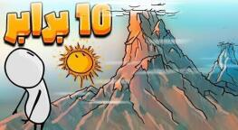

اگر اورست ده برابر بلندتر بود چه میشد؟

تا حالا به کوهی نگاه کردهای و پرسیدهای اگر ده برابر بزرگتر بود چه میشد؟ اورست امروز حدود ۸۸۴۸ متر است. ده برابر یعنی نزدیک ۸۸ کیلومتر. این دیگر فقط بلند نیست؛ از چند لایهٔ جو هم رد میشود.
این قله به کدام لایه میرسد؟
جو مثل پیاز لایهلایه است. تروپوسفر از سطح تا حدود ۱۲ کیلومتر میآید، استراتوسفر تا حدود ۵۰ کیلومتر، مزوسفر تا حدود ۸۰ کیلومتر، بعد ترموسفر و بالاتر اگزوسفر. اورست ده برابر از لایهٔ مزوسفر رد میشود و به جایی میرسد که هوا تقریباً دیگر برای نفس کشیدن وجود ندارد و دما خیلی بالا و پایین میشود.
کوهها چطور به وجود میآیند؟
کوهها از برخورد آرام یا خشن صفحات پوسته ساخته میشوند. این تکههای بزرگ به هم میخورند، زمین را چین میدهند و بالا میبرند تا قله درست شود. اما این کار محدودیت دارد. حتی اورست امروزی نزدیک سقف ارتفاع پایدار خودش است. گرانش، فشار و فرسایش با هم کوهها را کوتاه نگه میدارند.
پوستهٔ قارهای بهطور میانگین حدود ۳۵ کیلومتر ضخامت دارد؛ مثل یک لایهٔ نازک روی سیاره. کوهی ده برابر بلندتر فشار خیلی بیشتری وارد میکند. دانشمندان میگویند اگر کوهها از حدود ۹ کیلومتر خیلی بلندتر شوند، سنگ زیرشان دیگر تاب نمیآورد و مثل مادهای نرم به داخل فرو میرود. پس پوسته احتمالاً این وزن را تحمل نمیکند؛ ولی برای این آزمایش فکری کمی قانون زمینشناسی را کنار میگذاریم.
آبوهوا به هم میریزد
کوهها نقش بزرگی در آبوهوا دارند. وقتی باد به کوه میخورد مجبور میشود بالا برود، سرد میشود و ابر میسازد. برای همین معمولاً یک سمت کوه سبز و پرباران است و سمت دیگر خشک؛ به این میگویند اثر سایهٔ باران.
کوهی ۸۸ کیلومتری این اثر را خیلی تندتر میکند. یک سمت بارش بسیار شدید میبیند و سمت دیگر بیابان وسیع میماند. حتی رودخانهٔ باد بالا، یعنی جتاستریم، که روی آبوهوای کل دنیا اثر دارد، اگر به دیواری ۸۸ کیلومتری بخورد مسیرش بههم میریزد.
گرانش کوه
هر چیزی که جرم دارد گرانش هم دارد. کوههای امروزی هم گرانش دارند، اما جرمشان در برابر زمین ناچیز است. اگر ارتفاع یک کوه ده برابر شود و شکلش شبیه بماند، حجم و جرم تقریباً هزار برابر میشود. نیروی گرانش با جرم نسبت مستقیم دارد؛ پس نزدیک پای این کوه ممکن است کشش خیلی کوچکی به سمت دامنه حس شود، هرچند در فاصلههای دورتر گرانش زمین هنوز غالب است.
دنیای کوههای غول
اگر کوهها ده برابر شوند فقط اورست به آسمان نمیرسد. کل رشتهکوهها دیوارهای جوی میشوند، باد جهانی را به هزارتوی نامنظم تبدیل میکنند، آبوهوای خیلی محدود میسازند و گرانش محلی را کمی عوض میکنند. دنیایی جذاب و سخت. این آزمایش فکری یادآوری میکند که ارتفاع کوه فقط یک عدد روی نقشه نیست؛ به پوسته، هوا و حتی کشش زمین بند است. تا فکر بعدی، کنجکاو بمان.